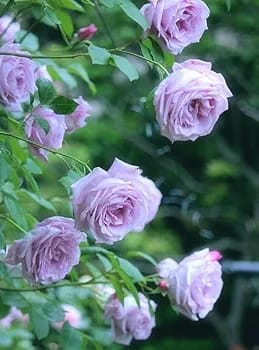
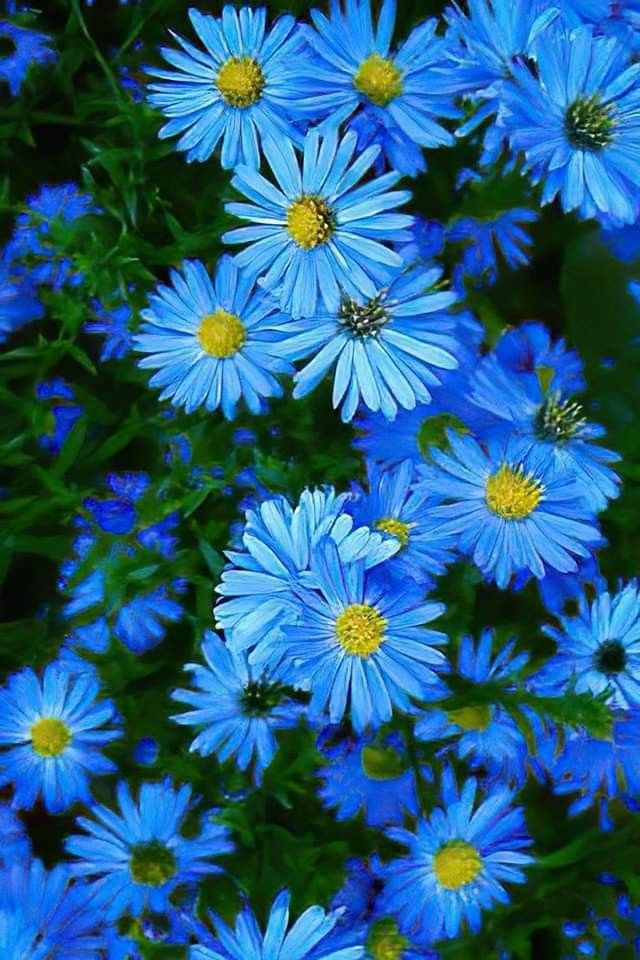
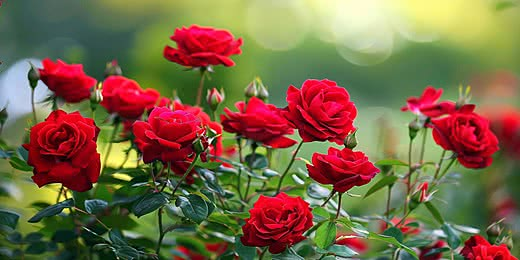

Nature's Magic
Nature is the ultimate architect of beauty.
From the delicate patterns of a blooming flower to the majestic strength of ancient trees,
every detail invites us to pause and reflect.
Explore our gallery to experience the serenity and vibrant colors of the natural world.
On this site we take you on a tour among these divine designs,
to discover together how art meets engineering in every leaf and every flower petal.
Our goal is to highlight the creativity that surrounds us and invites us to contemplate the finest details.
Every flower that blooms and every branch that sways is not just a coincidence, but a magnificent geometric design that humans are incapable of imitating.
The Colors of flowers
:
Cold colors
purple
- Elegance:
Purple flowers represent luxury, class, and high-end taste.
- Creativity:
This color is linked to imagination and out-of-the-box thinking.
- Spirituality:
It symbolizes a deep connection with nature and inner wisdom.
- Mystery:
It has a unique charm that sparks curiosity and wonder

Baby blue
- Calmness:
This color brings a sense of inner peace and relaxation to the soul.
- Uniqueness:
Light blue flowers are rare and represent dreams that are hard to reach.
- Harmony: It
reflects the perfect balance between the color of the sky and the water.
- Hope:
It symbolizes new beginnings and a bright, clear future.

Warm colors
Red
- Energy:
Red is a vibrant color that brings life and passion to any garden.
- Confidence:
It symbolizes strength and boldness in design.
- Timeless Beauty:
A classic choice that never goes out of style
.
- Focus:
In engineering terms, red is a focal point that captures everyone’s attention

Register Now
ِClick here to learn more about colors of flower